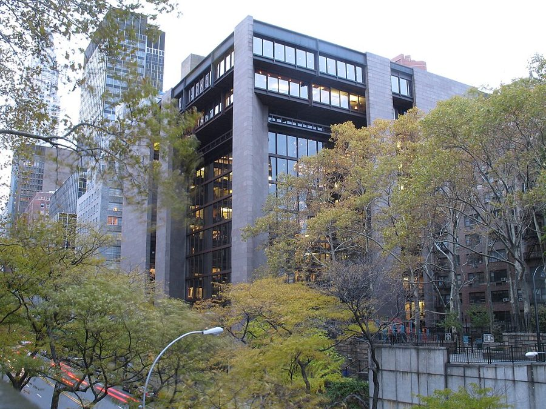
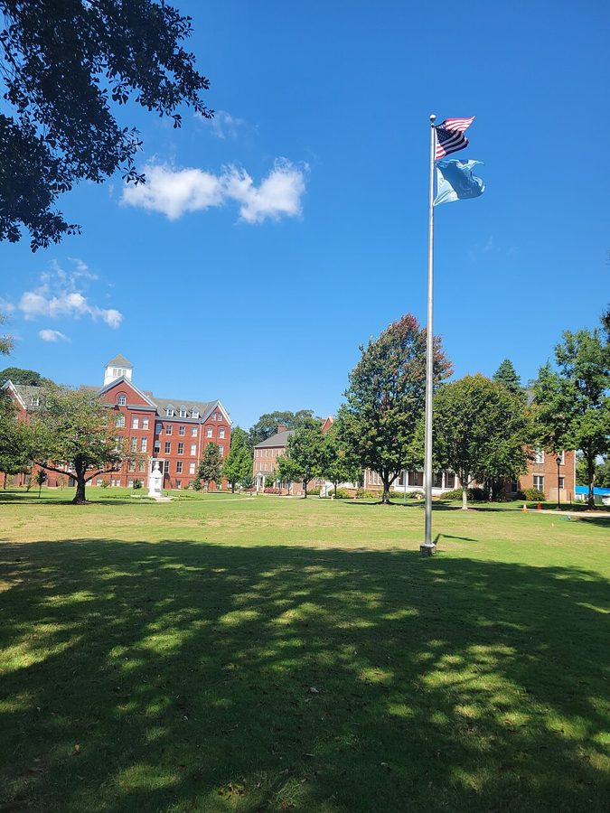

这一页在做什么
上一页末尾，他请假离开 UCLA，到华盛顿的 Urban Institute 主持族群研究。这一页是那两年和回加州的头几个月，四十二到四十四岁。十六封信，四封是别人写来的。
前一半是公事：和研究所的管理层斗、找钱，抗议基金会和哈佛的做法；后一半是家事：回洛杉矶、搬出家门、给 Audrey 打电话。读的时候留意，同一件事他对不同的人用什么口气。
1973 1974 1975
Urban Institute，华盛顿
UCLA
10 月搬出家门
人事和钱 学校的标准 智商研究 家事
本站示意图。一个圆点是一封信，按信上的日期画，挤在一起的略微拉开了；空心的是别人写来的。四行是本站按话题分的，不是书里的分法。1973 年的信全是公事，1974 年只有五封，后四封都在回加州以后。
洛杉矶 Venice 的海滩，2015 年。1974 年 10 月他搬出家，住进 Venice 的一个小开间；这一页最后一段说，他后来和一位朋友沿着海滩骑车。Mike McBey，CC BY 2.0，维基共享资源
这一页的串场文字比信长。经费条款背后的算计、裁人的经过、婚姻怎么走到头，都是 2007 年补写的；当年的信往往只有两三句，有的只印了一句玩笑。
收信人和提到的人
这一页有十五位通信的人，其中四位是写信来的，两位的名字换成了星号。只有名或只有缩写的，书里就给了这么多，本站照书里的叫法。
Milton Friedman，1976 年。信里的 Milton。串场文字说，1973 年 1 月他正在心脏手术后休养。UPI，公有领域，维基共享资源
Ivan 项目的外聘顾问 · 书里只有名 研究所没按时把顾问费付给 Ivan，他写信道歉。只印了两句，是这一页火气最大的两句。
Milton Milton Friedman · 芝加哥大学的老师 60 年代称 Mr. Friedman，现在直呼其名。Friedman 想转载他上一页那封给 Swarthmore 的信，他同意，又附上一封新的。
Mr. Gragg 斯坦福的某人 · 书里只给了姓 他在福特基金会的会议上听完 Kenneth Clark 的演讲，第二天把感想写给了这位。Clark 是谁见背景。书里没说两人是什么关系。
Phyllis 电视谈话节目的主持人 · 书里只有名 他头一次上谈话节目就是她主持的。她想去黑人院校教电视制作，他写信劝她想清楚，还替她另写了一封信去打听。
David Riesman 哈佛的社会学教授 · 写来的 他把哈佛暑期班那封回绝信转给了 Riesman。Riesman 回信说，这个班筹办时自己就反对过同样的做法，没有用。称呼是 Dear Dr. Sowell，两人还没见过面。
Mike 别处的一位同行 · 书里只有名 经费终于到手，他报喜，顺带讲了拨款里的一个条款。
Mary 研究生时代的笔友 · 书里只有名 60 年代那位读博的黑人女研究生。他有了钱，想请她来做智商研究，她来不了。信只印了三句。
Martin Bronfenbrenner 经济学家 · 写来的 1968 年他写信反驳过这位教授（当时在 Carnegie Mellon），后来熟了。这里是一张短笺，谢他寄来谈 Jensen 的材料。
J.M. 项目里负责收集智商数据的年轻女同事 · 写来的 一张内部便条，约他听进度汇报。书里只留了缩写。
George 康奈尔的旧同事 · 书里只有名 串场文字只说是康奈尔的旧同事。他向这位 George 总结在研究所的两年，只印了一段。
Margo 项目秘书 · 书里只有名 他走以后还留在研究所收尾。信只印了四句，说回到加州有多轻松。
Birdie 哈莱姆那个家的姐姐 串场文字说他这时已和养母一家恢复了联系。妻子 Jean 先向 Birdie 诉了苦，他写信说明。落款是 Tommy，家里人对他的叫法。
Audrey 化名 · 一封写去，一封写来 60 年代初的女友，九年没有联系。他听说她也离了婚，打了电话，又写信约她吃饭。她回了一张三行的便条。
这个 Mary 是哪一个。 是 60 年代的笔友，不是姐姐 Mary Frances（下一页开头会出现），也不是 70 年代末才出场的那位 Mary。George 也要分清：60 年代末那两封 Dear George 是写给导师 George Stigler 的；这一封的 George，串场文字说是康奈尔的旧同事，是另一个人。
两位星号收信人。 2 月 20 日那封写给福特基金会的一位官员，6 月 4 日那封写给哈佛一个暑期班的负责人，名字都换成了星号。串场文字里公开批评哈佛医学院的那位教授、加州那位被吊销执照的医生，书里也没给名字。本站不猜。
信件地图
一条是一封信。斜体字是那封信正文开头的几个词，照这一版屏幕上的字抄的，在 Kindle 里搜它就能跳过去。编号是黄底的，是别人写来的信；这一页有四封。「留意」只给方向，答案在信里。
First of all, let me apologize 1973 年 1 月 18 日 · 写给 Ivan 留意：他替谁道歉，骂的又是谁；第二句的公文腔是玩笑的一部分。It was very good to learn 1973 年 1 月 18 日 · 写给 Milton Friedman 留意：最后一段里是谁向谁解释道理；末句的感叹冲着谁。The pathetic intellectual level of a 1973 年 2 月 13 日 · 写给 Mr. Gragg 留意：信只有两句。后面两段长的是 2007 年写的，分清哪些话当年没写进信。The conference on race and 1973 年 2 月 20 日 · 写给福特基金会的 ****** 留意：他说基金会的钱害了谁、怎么害的；那位朋友为什么差点落泪。Let me say again what a 1973 年 5 月 30 日 · 写给 Phyllis 留意：开头的玩笑；他劝她别去，理由是学生、同事，还是别的。An old colleague of mine at 1973 年 6 月 4 日 · 写给哈佛暑期班的 Mr. ****** 留意：那个学生为什么被拒；他从一封信推到一项政策，凭的是什么。Did I write 1973 年 8 月 27 日 · David Riesman 写来 留意：当年那两位医生不想要哪一种学生；Riesman 这边是哪两个人在反对。We now have money! Filthy lucre. 1973 年 7 月 18 日 · 写给 Mike 留意：日期比上一封早，是编书时挪的。那个条款保护的是谁。You'll be sorry you did not 1973 年 7 月 20 日 · 写给 Mary 留意：他说哪一种反驳对 Jensen 有用，哪一种没用。Thanks for you letter of 1973 年 10 月 3 日 · Martin Bronfenbrenner 写来 留意：这句祝贺是夸他，也是在说别人。说的是谁。Your happy, intelligent, well-informed crew 1973 年 10 月 12 日 · J.M. 写来的便条 留意：三个形容词是谁在夸谁；串场文字为什么把它算作轻松的一刻。This stint at the Urban Institute 1974 年 4 月 16 日 · 写给 George 留意：最后一句用了被动语态，他是认了还是没认。It is good to be back 1974 年 8 月 22 日 · 写给 Margo 留意：三个 It is good 各说的是什么；最后一句和后面哪封信对得上。We have now found a place 1974 年 8 月 25 日 · 写给 Birdie 留意：第一段末句的假设语气；他介意的是 Birdie 知道了，还是别的。It was good to hear your 1974 年 10 月 27 日 · 写给 Audrey 留意：他说分开以后是什么感觉，唯一放不下的是什么；末段提了什么请求。Would love to see you for 1974 年 11 月 4 日 · Audrey 写来 留意：三行字，算不算拒绝；后面的串场给了几种解释。
背景：作者默认你知道的事
拨款里的一句话
研究经费怎么走，Odyssey 第 9 章的伴读讲过：钱由基金会或政府机构拨给研究所，研究所抽走一大块管理费，剩下的归项目用。信里多出来的是一个条款：有一笔钱写明只在他任项目主任期间可用。
串场文字解释了它防的是什么：研究所可以先拿他当招牌把钱要来，再换一个听话的人来管。
出钱的一方 基金会、政府机构
Urban Institute 管账，抽管理费
他的研究项目 雇人、收集数据
拨款里的一条 这笔钱只在 Thomas Sowell 任项目主任期间可用
后果 换掉他，这笔钱就没了； 他辞职，钱也没了
本站示意图。上面一行是通常的走法；下面是 7 月给 Mike 的信里说的那个条款，和串场文字讲的后果。后来他裁掉不听指挥的人、福特基金会随后补上拨款，他猜也和这一层有关，但说明了只是猜测。
福特基金会

福特基金会在纽约东 43 街的总部大楼，2007 年。信里说的会议不在这里开。Stakhanov，CC BY 3.0，维基共享资源 Ford Foundation 是美国最大的基金会之一。1969 年起它给大学里新办的黑人研究项目拨款，也资助黑人院校。在支持者看来，这是把钱用在最缺钱的地方。
他的不满在用法：钱给了他认为不合格的人，又用奖学金把好学生引过去。他自己的项目后来也拿了这家的钱。
Kenneth Clark，和被一并点名的两位
Kenneth Clark 和妻子、合作者 Mamie Clark，1958 年，在纽约州的家中。Charlotte Brooks，公有领域，维基共享资源
心理学家，纽约市立学院教授。他和 Mamie Clark 做的「娃娃实验」被 1954 年最高法院判学校隔离违宪的 Brown 案引用，他因此成了最有名的黑人学者之一。
串场文字把他和专栏作家 Carl Rowan、联邦法官 Leon Higginbotham 一起说成被白人精英捧高的平庸之辈。这是他 2007 年的评语，话很重；三位在各自的行当里都有公认的成就。
Jensen，和该不该研究
1969 年，Berkeley 的教育心理学家 Arthur Jensen 在《哈佛教育评论》上发表长文，认为黑人和白人平均智商的差距可能有一部分出于遗传，引起轩然大波。
这一页里有两种反对 Jensen 的办法。Clark 那一种是不碰：做这种研究等于抬举它。他那一种是去收集数据，看遗传的解释经不经得起检验。
对方的做法或说法
他的反对
福特基金会：出钱办面向 黑人的项目和奖学金
钱把最有前途的年轻人， 引进了不合格的人办的项目
哈佛的暑期班：回绝 条件太好的申请人
等于专挑把握小的学生， 而医生手里是人命
Kenneth Clark：研究种族 和智商，是抬举 Jensen
不查清现在站在哪， 就谈不上往哪走
本站示意图。左边一栏都是从他的信和串场文字里转述的，对方自己的话书里只印了哈佛回绝信里的一句和 Clark 用的一个词。第三行右边是 2007 年的串场文字，不是当年的信。
「高风险」学生，和 Spelman

亚特兰大的 Spelman College 校园，2023 年。Broadmoor，CC BY-SA 4.0，维基共享资源 1960 年代末起，许多名校为少数族裔学生另设招生和补习项目。办的人的想法是：条件好的学生自己能出头，名额该留给没有机会的人，这类学生在行话里叫 high risk。他和 Riesman 反对的就是这个取舍。
Riesman 信里举的 Spelman 是亚特兰大的黑人女子学院，1881 年创办，在黑人院校里声誉很高。
David Riesman
哈佛的社会学家，1950 年和人合写的 The Lonely Crowd 是战后美国最畅销的社会学著作之一。1967 年他和 Christopher Jencks 发表长文批评黑人院校的质量，挨了很多骂；那时索维尔写信去表示支持，见 60 年代的页。
所以 1973 年这封回信不是陌生人之间的客套：两人在同一个问题上早就站在一边。
Odyssey 里讲过这一段
这两年在回忆录的第 9 章后半，回加州以后在第 10 章开头。回忆录讲事情的经过，这一页的信是当时说给别人听的几句话。
研究所里的两年 Odyssey 第 9 章（下） 回忆录有完整的经过：和副总裁吵架，两笔拨款怎样在最后几天到账，年底裁人，后来由一位协调人替他管日常事务。信里只有几个瞬间，但火气是当场的。裁人和福特基金会补款之间的关系，回忆录没有猜，这本书的串场文字猜了。
去那一页 → 福特基金会的会，和头一次上电视 Odyssey 第 9 章（下） 回忆录只说会上一位有名的黑人学者劝他别做智商研究，没有点名；这本书点了 Kenneth Clark 的名。回忆录说 1973 年 4 月那个纽约的谈话节目是他头一次在媒体露面；给 Phyllis 的信里，他说自己以前还上过一个智力竞赛节目。
去那一页 → 回加州，搬出来 Odyssey 第 10 章（上） 回忆录讲了 Venice 那间小屋、Margo 后来辞了新工作回来帮他、要不要争抚养权的那一夜。两本书有两处对不上：酒量，回忆录说最多时一周一瓶左右，这里说一两瓶；劝他别争抚养权的，回忆录说是律师和别的人，这里说 Audrey 在电话里也劝过，理由不同。
去那一页 → Audrey 的电话，哈佛的暑期班 回忆录没写 回忆录里没有 Audrey 这个名字，也没有 1974 年这通电话。给哈佛的抗议、Riesman 的回信、给福特基金会官员的那封信，回忆录都没有提。
这一版的错字
只收会让人读不懂、或者在 Kindle 里搜不到的。第一格是屏幕上的字，照抄的；第二格是本站有把握的原字。问号前多出来的撇号全书都有，见「开读之前」，这里不列。
屏幕上的字 应为 在哪 in-fighting and hack-stabbing in-fighting and back-stabbing 这一页第一段串场。背后捅刀，b 认成了 h Ford Foundation conterence Ford Foundation conference 给 Gragg 的信前面的串场 taught at I Toward University taught at Howard University 给 Phyllis 的信。搜 Howard 搜不到这一句 the students arc also the students are also 同一封信靠后 A term letter received A form letter received 哈佛那封信前面的串场。意思变了：是套印的统一回函，不是「学期信」 Ile pointed out He pointed out 哈佛那封信后面的串场 famous for his hook famous for his book 介绍 Riesman 的串场。紧跟着的书名整个认坏了，是 The Lonely Crowd write you-l know I meant write you—I know I meant Riesman 来信的第一句。大写的 I 认成了小写的 l Kenneth ('lark's objections Kenneth Clark's objections 给 Mary 的信后面的串场。搜 Clark 搜不到这一句 recourse- alter which recourse—after which J.M. 的便条后面的长串场：裁人之后，基金会才给钱 had asked for befirre had asked for before 同一句的末尾 and it.makes me feel and it makes me feel 给 Birdie 的信 not to do iton grounds not to do it—on grounds Audrey 的回条后面的串场
一个脚注号，几处丢了的破折号。 写着经费到手的那段串场里，Urban Institute 后面多出来的撇号是脚注号。脚注是图片，只有一句：请读者去看回忆录里讲研究所的那十来页。这一页还有几处破折号整个丢了，前后两截直接连在一起，如 capital assets its promising young people 、moderate drinking perhaps a bottle ，读的时候在中间停一下。
词与短语
按信的顺序排，串场文字里的词条归到它后面那封信的组里。斜体小字是那句话里的几个词，照这一版屏幕上的字抄的（撇号是直的），在 Kindle 里搜它就能跳到那一句。单个的生词长按就能查，这里收的主要是词典帮不上忙的。
1973 年 1 月 · 给 Ivan
skeleton staff
… to maintain a skeleton staff while proposals …
最少的留守人手
只剩骨架。钱不够，先养几个人写申请书。
battle-scarred veteran
… was already a battle-scarred veteran of …
一身伤疤的老兵
夸张：到这时他来了才半年。
in-fighting
… veteran of bureaucratic in-fighting and …
内斗
本是拳击里的贴身近战。后面跟的那个词是 back-stabbing 的错字，见错字表。
outside consultants
… one of our outside consultants who had …
外聘的顾问
不是研究所的雇员，按活计付酬，钱要经研究所的行政部门发。
given
… Given the stringent laws on murder, it …
鉴于
given 放在句首当介词用，和「给」无关。
not feasible
… it is not feasible to shoot them, …
不可行
feasible 是写可行性报告的词。拿它来说枪毙人，玩笑就在这个反差上。
only partially effective
… anything else is only partially effective. …
别的办法都只管一点用
往轻里说。意思是：骂也骂了，吵也吵了，都不解决问题。
1973 年 1 月 · 给 Milton Friedman
no objection whatever
… and have no objection whatever. It …
毫无异议
whatever 跟在否定的名词后面，只起加强作用，等于 at all。
Commentary
… the January issue of Commentary. I …
《评论》月刊
纽约的一份思想评论月刊。他是在提醒 Friedman：那封信已经登过了。
as you see fit
… may do with as you see fit. …
您看着办
see fit = 认为合适。书信里把东西交给对方处置的套话。
black mysticism and white paternalism
… to reject black mysticism and white paternalism …
黑人的玄谈和白人的家长式照顾
他的用语，两样他都反对。后面的 alike 是「两样都」。paternalism：像父亲管孩子那样替人做主。
double standards
… white faculty members with double standards and …
两套标准
with 修饰前面的 faculty members：给黑人学生另一套打分标准的白人教师。不是「带着两套标准去找教师」。
a commentary on our times
… What a commentary on our times when …
这个时代的写照
a commentary on 是「足以说明……的一件事」，多用于坏事。上一段刚出现过杂志 Commentary ，这里是普通名词。
the facts of life
… explain the facts of life to Harvard …
最基本的道理
原是大人给孩子讲「孩子是怎么来的」的委婉说法，引申为人人该懂的现实。这里倒过来：穷学生讲给哈佛教授听。给 Mike 的信里又用了一次。
1973 年 2 月 · 给 Mr. Gragg
pathetic
… The pathetic intellectual level of a …
差得可怜
口语里的 pathetic 是「差劲得让人看不下去」，没有同情的意思。
idolize
… I do not idolize youth which …
盲目崇拜
1970 年前后「相信年轻人」是流行的话。他先撇清，再说自己的理由。
mental caliber
… that the mental caliber of many …
脑力的档次
caliber 本是枪炮的口径。
in the pipeline
… blacks in the intellectual pipeline is …
还在培养途中的
管道里的，就是还没毕业、没成名的那一批。
finished products
… mental caliber of our finished products. …
成品
接着管道的比方：已经成名的那一代。our 是「我们黑人的」。
1973 年 2 月 · 给福特基金会的 ******
airs
… had the airs of an intellectual but …
派头，架子
复数的 airs 是装出来的样子。这一段和下一段都是 2007 年写的。
on the scene
… who happened to be on the scene when …
正好在场
意思是赶上了时候，不是凭本事。
thrust into prominence
… blacks to be thrust into prominence, so …
被推到台前
被动语态是有意的：是别人推上去的。
inflated
… were given an inflated status and …
虚高的
通货膨胀的那个词。后半句又用一次，说自尊心也跟着涨。
ostensibly
… such research, ostensibly on grounds that …
表面上的理由是
用了这个词，就是不信对方说出口的理由。下半句是他自己的猜测。
dignify
… would “dignify” the theories of Arthur …
抬举，给它本不配有的体面
Clark 的用词，所以加了引号：认真去反驳一个说法，等于承认它值得反驳。
get there from where we were
… we had to get there from where …
只能从现在站的地方出发
他不同意 Clark 的理由全在这半句：先得知道实际情况。
trying
… in some respects and trying in others. …
磨人的
形容词，「考验耐心的」。这一句没有动词，是电报式的写法。
for effect
… simply indulging in overstatement for effect. …
为了效果（故意说重）
他在会上当面问过基金会是不是认真的。这里说：那不是夸张。
with it
… wanting to be “with it” and wanting …
跟得上潮流
1960 年代的俚语，现在不大说了。他把基金会的动机说成赶时髦。
it was all he could do to
… it was all he could do to fight …
他费了好大劲才
字面是「他能做的全部就是」。意思：差一点没忍住眼泪。
tough customer
… what a tough customer he is to …
硬汉，不好惹的人
customer 在口语里可以泛指「家伙」，和顾客无关。
back to the hilt
… Foundation had backed to the hilt, but …
全力撑腰
hilt 是剑柄。剑一直刺到剑柄，就是到头了。
cryable
… only be called laughable-or cryable. He …
可哭的
他照着 laughable 造的词，词典里没有。短横应是破折号。
gauleiters
… many such cultural gauleiters whom Ford …
一方头目
德语，纳粹党的大区领袖。拿来说基金会扶起来、各管一摊的人，是极重的话。
set up in business
… Ford has set up in business. …
出本钱让人开了张
把办项目说成开买卖，是挖苦。
ungracious
… It may appear ungracious to censure an …
不识好歹
先替对方把反驳说了：人家是在捐钱。censure 是谴责，别和 censor（审查）混。
drain off
… is often used to drain off some …
抽走，引走
像排水一样。被引走的是最好的年轻人。
dangle
… Dangling $5,000 a year fellowships for …
拿……在眼前晃
吊着诱饵。fellowship 是给研究生的奖学金。
capital assets
… destroying the race's major capital assets …
最要紧的本钱
会计用语：资本资产。经济学家把有前途的年轻人算作一个族群的本钱。
1973 年 5 月 · 给 Phyllis
hostess
… The hostess was a young black …
女主持人
不是女主人。现在不分男女都叫 host。
Jeopardy
… as a contestant on “Jeopardy,” and …
美国的电视智力竞赛节目
contestant 是参赛的选手。
beat by miles
… this clearly beats that by miles. …
强出一大截
beat 是胜过。this 是这次做嘉宾，that 是当选手。
unbiased evidence
… accept that as unbiased evidence. …
「不带偏见的证据」
正话反说。自家亲戚说好，当然最有偏见。
to show for it
… only disillusionment to show for it. …
到头来只落得
have something to show for it ：付出之后拿得出来的成果。这里拿得出来的只有幻灭。
household words
… corporations that are household words, and …
家喻户晓的名字
说的是那几位同事离开以后去的大公司。
institutional forces
… Institutional forces are enormously powerful, and …
体制的力量
这封信的关键词。他劝她的理由不是学生不行，是学校的领导和规矩会把想做事的人磨掉。
1973 年 6 月 · 给哈佛暑期班的 Mr. ******
high risk
… the “high risk” black student was …
高风险的
招生的行话：按成绩看很可能跟不上的学生。见背景。
viable candidate
… make you a viable candidate for admission …
有望录取的人选
这是那封回绝信里的话：你条件够好，用不着我们。
beef up
… to beef himself up intellectually for …
补强
口语，本来说长肌肉。
the sheer arithmetic
… that the sheer arithmetic of your situation …
光是数目上的限制
名额就这么多，申请的人更多。先让一步，再说 What shocks me。
form letter
… that this is a form letter suggests …
套印的统一回函
同样的话寄给很多人。他由此推断这不是一个人的遭遇，是一项政策。前面串场里的 term letter 是它的错字。
in a position to know
… people in a position to know have …
知情的（人）
不点名的说法：消息来自内部。
obscure
… were not at obscure medical schools. …
不知名的
往轻里说。信后的串场文字挑明了：他指的就是收信人自己那所医学院。
talk ourselves into
… have we talked ourselves into when …
自己把自己说进了（这种局面）
talk someone into 是说服某人去做。主语用 we，没有只指对方。
grim overtones
… has particularly grim overtones in a …
叫人发冷的弦外之音
risk 这个词，放在医学里就是病人的风险。
1973 年 8 月 · David Riesman 写来
advantaged
… she was already advantaged; the program …
条件已经够好的
disadvantaged（处境不利的）的反面，那些年的官样说法。Riesman 在转述两位医生的话。
coziness
… given a certain coziness at Spelman, the …
小而亲、受呵护的气氛
Riesman 的意思：从那样的环境到哈佛医学院，这一步并不小，她算不上占了便宜。
make headway
… don't think we made much headway against …
取得进展
本是船顶着风往前走。往轻里说：没人听。
bring you this way
… your work should bring you this way, …
（要是公事）让您到这边来
书信里邀人见面的客气说法。should 在 if 从句里表示「万一」。
1973 年 7 月 · 给 Mike
misadventures
… experiencing many misadventures and delays at …
倒霉事
这半句末尾多出来的撇号是脚注号，见错字表下面的说明。
up to full strength
… my project up to full strength and …
满员
军队的说法：一支部队配齐了人。
filthy lucre
… Filthy lucre. I feel corrupted already.... …
臭钱
出自英王钦定本《圣经》的说法，lucre 现在只活在这个短语里。自嘲。
incumbency
… “during the incumbency of Thomas Sowell” as …
任职期间
incumbent 是现任者。引号里是拨款文件的原话。
racket
… of life in the research racket. …
（不大干净的）行当
racket 本指敲诈、骗钱的营生。把做研究叫 racket，是他的评价。
a front
… to use me as a front to get …
门面，幌子
pliable
… with someone more pliable who would …
好摆布的
本义是容易弯的。
1973 年 7 月 · 给 Mary
pen pal
… my old pen pal from graduate school …
笔友
凭这个词认出她是 60 年代那位 Mary。
and company
… Jensen and company are vulnerable empirically, …
……那一派人
人名加 and company ，是「他和他那一伙」，略带不敬。
vulnerable empirically
… and company are vulnerable empirically, while …
在事实证据上有破绽
empirically：拿数据说话。和它相对的是下半句的哲学、政治上的反对。
water off a duck's back
… as water off a duck's back. …
泼在鸭背上的水
一点不沾，毫无作用。
1973 年 10 月 · Martin Bronfenbrenner 写来
disparities
… race could not explain such disparities. …
差距
这一段是 2007 年的总结。他的推论是：既然不少白人群体的分数也差不多低，光用种族就解释不了。
signs of the times
… one of the signs of the times. …
世风的征兆
出自《马太福音》。多用来叹气。
let it go at that
… reactionary and let it go at that.... …
就此了事
骂一句法西斯、反动派就算驳倒了。Bronfenbrenner 说的是当时多数人对付 Jensen 的办法。
1973 年 10 月 · J.M. 的便条
crew
… happy, intelligent, well-informed crew would like …
手下这班人
前面三个形容词是自夸，是下属跟上司开的玩笑。上一行的 Re: 是「事由」，不是 reply。
run to
… encouraged people to run to them with …
跑去找……告状
像孩子跑去找大人。他拿 Howard 的学生找教务长作比。
for lack of money
… the troublemakers for lack of money, leaving …
以没钱为由
没钱是真的，裁谁是他挑的。这样裁，对方没有申诉的余地。
a happy coincidence
… have been a happy coincidence but …
碰巧的好事
might have been … but ：他不信是碰巧。下半句是他的猜测，他自己也只说是 suspicion。
expendable
… the troublemakers now found them expendable. …
可以丢掉的
军事用语：可以牺牲的兵力。
let go
… were simply let go by the Urban …
被辞退
解雇的委婉说法，不是「放手」。
1974 年 4 月 · 给 George
stint
… This stint at the Urban Institute …
一段任期
定了期限的一段差事。
could have done without
… of which I could have done without but …
宁可没有
往轻里说：这些经历糟透了。
Byzantine intrigue
… the level of Byzantine intrigue and amorality …
拜占庭式的勾心斗角
Byzantine 形容错综复杂的宫廷权术。amorality 是不讲是非，和 immorality（做坏事）不同。
muster
… more fortitude than I can muster. …
鼓起
本义是集合部队。fortitude 是忍受的勇气。
It is said that
… It is said that I have become …
据说
往轻里说。别人说他难打交道，他用被动语态转述，不辩解，也不认错。
1974 年 8 月 · 给 Margo
a modus vivendi of sorts
… now a modus vivendi of sorts on …
勉强算是相安无事
modus vivendi 是拉丁文，谈不拢的两方暂时共处的办法。of sorts = 勉强算是。
trying to prove something
… to be trying to prove something. Though …
总在较劲
不是证明什么事实，是事事要争个高下。这是他单方面的说法。
the irrevocable step
… to take the irrevocable step that would …
收不回来的那一步
little considerations
… me much appreciated little considerations to ease …
小小的体贴
consideration 作可数名词是体贴的举动，不是「考虑」。
this time
… the administration is doing this time. …
这一回（又在搞什么）
两个词带出了「每回都有事」的意思。the administration 是研究所的管理层，不是政府。
1974 年 8 月 · 给 Birdie
is to
… If the marriage is to survive, this …
要想……的话
if … is to ：如果还指望。话没有说死，但已经不乐观。
my version of the story
… family with my version of the story. …
我这一边的说法
他承认两边各有一个说法。
it was my place to
… but it was my place to discuss …
该由我来（说）
place 是本分、轮得到谁。Birdie 是他这边的亲人。
back east
… when I am back east this fall. …
回东部
住在西海岸的人管去东海岸叫 back east，哪怕不是那里的人。
1974 年 10 月 · 给 Audrey
much less
… be appreciated, much less reciprocated, I …
更不用说
先否定轻的，再否定重的：连领情都没有，别说回报。
studio apartment
… a little studio apartment in Venice, …
不分卧室的开间
could charitably be called
… that could charitably be called modest, and …
说得厚道点，可以叫
modest 是简朴。意思是实际上比简朴还差。
professional niche
… found a professional niche that satisfies …
事业上合适的位置
niche 本是墙上放雕像的壁龛。
for the long haul
… settle permanently for the long haul.... …
长久地
haul 是长途拖运。
A.T. & T.
… a lot while at A.T. & T. because …
美国电话电报公司
1964 到 1965 年他在那里做过一年，Odyssey 第 6 章讲过。那正是两人上一次有来往的时候。
a real pain
… will probably be a real pain, but …
烦死人的事
口语，省了 in the neck。和前一句的 trauma（创伤）对着用：烦是烦，不伤心。
1974 年 11 月 · Audrey 写来
tied up
… but will be tied up Nov. 8th …
有事，脱不开身
不说是什么事。下一行只有三个词：下回再约。
leave in the lurch
… leave my children in the lurch for …
丢下不管
在人最需要的时候走开。
move on
… In any event, I moved on. Within …
翻过这一页
感情上放下，往前走。
committing incest
… as if I were committing incest. Still …
像是在乱伦
夸张的比方，不是字面意思：两人做了太多年朋友，熟得像一家人。
值得停下来的句子
What a commentary on our times when underprivileged kids have to explain the facts of life to Harvard professors.— 1973 年 1 月 18 日给 Milton Friedman 的信。本站译：穷孩子得反过来给哈佛教授讲最基本的道理，这是个什么世道。
这是感叹句，没有主句的动词：What a commentary … when … ，when 后面才是事情。the facts of life 本来是大人讲给孩子听的，这里上下颠倒了。
前一句交代了经过：有黑人学生去找打分宽松的白人教师，说自己需要准确的分数才好安排将来。他这几年批评降低标准，常被说成和黑人学生过不去；这句话里站在他这边的正是学生。这是他从一位哈佛教师那里听来的，书里没有别的佐证。
Given the stringent laws on murder, it is not feasible to shoot them, and anything else is only partially effective.— 1973 年 1 月 18 日给 Ivan 的信。本站译：鉴于有关谋杀的法律十分严格，枪毙他们并不可行，而别的办法都只能起一部分作用。
三个分句，全是写报告的词：Given 、stringent 、feasible 、partially effective 。内容是想把研究所的行政人员毙了。口气越正经，火气越显得大，这是他挖苦人的常用办法。
同一天他给 Friedman 的信彬彬有礼。一年多以后给 George 的信里，他承认别人说他变得难打交道。三封信放在一起，看得出这两年对他的消耗。
检查一下理解
先在心里答，再点开。答错的那题，回书里把那封信再读一遍。
1. 给 Ivan 的信里，他道歉是因为自己做错了什么吗？ 不是。Ivan 是项目的外聘顾问，研究所的行政部门没有按时付钱。他替研究所道歉，同时把行政人员骂了一顿。说枪毙是玩笑，火气是真的。
2. Kenneth Clark 劝他别做智商研究，这件事是 1973 年的信里写的吗？ 不是。给 Gragg 的信只有两句，说的是 Clark 前一晚的演讲水平太差。私下劝阻的事、Clark 给的理由、他对 Clark 动机的猜测，都在信后面的串场文字里，是 2007 年写的。
3. 给哈佛暑期班的信里说，那些情况不是发生在「不知名的医学院」。他指的是哪里？ 就是哈佛医学院。信里故意不点破，信后的串场文字说明了：几年前那所医学院的一位高层私下告诉过他。这是往轻里说，收信人读得懂。
4. Dear Mary 那封信是写给姐姐的吗？Dear Tom 那张短笺又是谁写的？ 都不是想当然的那个人。Mary 是他研究生时代的笔友，他想请她加入智商研究；姐姐叫 Mary Frances。Dear Tom 是经济学家 Martin Bronfenbrenner 写给他的，不是他写出去的。
5. Bronfenbrenner 祝贺他「顶住了诱惑」，是在挖苦他吗？ 不是，是夸他，顺带挖苦别人。当时反对 Jensen 的人多半骂一句法西斯就算完事。他寄去的材料是拿证据去驳，所以值得祝贺。串场文字把这张短笺叫作世风的一个征兆。
6. Audrey 的回条是不是拒绝了他？两人后来见面了吗？ 回条没有拒绝：她说那两天有事，让他下回再约。但两人始终没有吃成这顿饭。串场文字说他自己也不确定原因，给了两种可能：她那时也许已另有其人；也可能是他想起她在电话里劝他别争抚养权，自己改了主意。